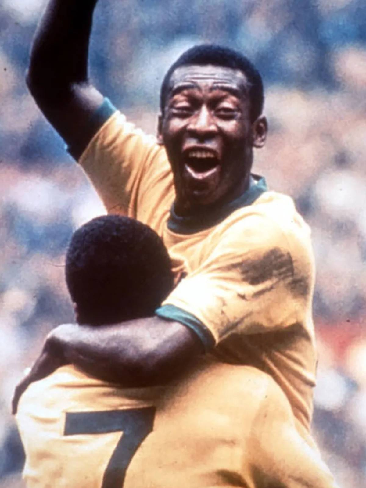

Carlos José Castilho
★ 27/11/1927 ✝ 02/02/1987

Local de Nascimento: Três Corações, Minas Gerais, Brasil
Posição: Atacante
Período: 1956-1977
Jogos: 1363
Gols: 1283
Assistências: 362
Principais Títulos: Copa do Mundo da FIFA: 1958, 1962 e 1970
Taça Libertadores: 1962 e 1963
Mundial de Clubes: 1962 e 1963
Pelé começou a jogar pelo Santos aos 15 anos e pela Seleção Brasileira aos 16. Durante sua carreira internacional, ele ganhou três Copas do Mundo da FIFA : 1958 , 1962 e 1970 , o único jogador a fazê-lo e o jogador mais jovem a ganhar uma Copa do Mundo (17). Ele foi apelidado de O Rei após o torneio de 1958.